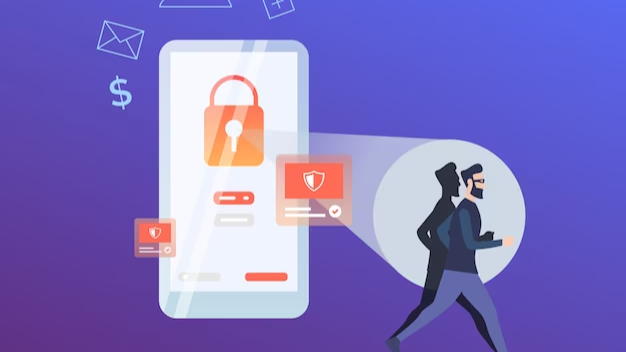
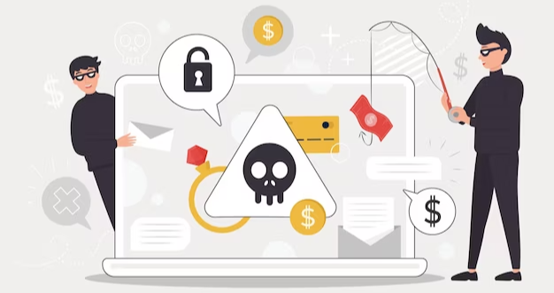

- If you do not click that link, your email service will be deactivated.
- Your payment of $2,374.27 is appreciated. Browse more info about this item below.
- I noticed unusual activity on your account. Click here to verify if it's legitimate or your account will be terminated.
- To qualify for this deal, reply to this message with your date of birth, email address, and password.
- Before opening a link contained in an email message, verify the authority behind the message. If someone you know sends an email message without including items to verify its authenticity, contact that individual via the phone number or website address.
- Images in emails sent by you may verify what they are created from by looking at the URLs of the links. If a supposed email supposedly comes from any University, be certain that the addresses indicated at the beginning of the messages lead you automatically to an authentic ".edu" web domain.
- Be suspicious of messages with a lot of typos and grammatical errors; that is a sign that they are from a phishing scam.
- Be wary of any email request to click a link to provide you with personal information.
- Don't open any sort of email attachment unless you know the source.
- Don't ever send sensitive information over email. Don't reach out to your Social Security number, credit card or banking passwords, and login data.
- Do not respond to unsolicited electronic messages, social media posts, or emails that contain personal information even if the people making the messages seem to know you personally.
- Think carefully about what information you read. Scammers often use urgency and danger in an attempt to trick individuals into believing their messages are genuine.
- Look closely at the content of every hyperlink. Pay close attention to all of the links that appear online.
- Beware of opening attachments that seem unusual. Cybercriminals use malicious attachments to compromise your computer, find sensitive information, or steal your devices.
- Don't provide false, private info to illegitimate providers, as they can misuse it. Legitimate companies won't request private information from customers by means of email.
- Go to the source. Check the legitimacy of a message by contacting the source directly through a different channel (such as using the telephone or in-person). If you are directed to a website to do something, ensure that the destination is a bonafide site.
The Best Tips For Phishing Protection
As the world continues to move online, cyber security becomes a more pressing issue every day. In recent years, phishing fraud has become an increasingly common tactic used by cybercriminals to gain access to private information. In this blog post, we will discuss what phishing fraud is, how to spot it, and what steps you can take to protect yourself and your business.
A type of cyber attack executed by hackers through emails is known as phishing. Phishing scams use an email that attempts to frighten or trick you into doing something, typically the purpose of this is to get the victim to reveal a password or other private info or to download a virus. Phishing scammers may attempt to steal your credit card and bank account numbers or your birthday and social security information.
Email scams commonly work by using shocking statements or threats in an attempt to get you to respond impulsively without thinking. Watch out for statements like, "This account is suspended, please do not respond."

These phishing scams ask you to "verify" or "confirm" personal information by answering with the asked information or clicking on a fake site that resembles a legit site. A phisher might create an imitation of a Gmail, Facebook, or University page with the intent of tricking people into mistakenly revealing their personal information.
Providing your information in any type of email response or via the Internet puts your accounts and personal identity at risk. Cybercriminals could use your accounts to initiate fraudulent money transfers or place fraudulent orders, and they could use your personal information for identity theft.
These are some tips to remember:

How to Defend Against Phishing:
In summary, phishing fraud is a serious problem that can cause financial losses and identity theft. However, there are a few tips and tricks you can use to spot and prevent phishing fraud. To keep yourself safe, always be wary of emails, texts, and websites that ask you to provide personal information, and double-check the URL of websites before you enter any information. By taking these steps, you can get protection from falling victim to phishing fraud.